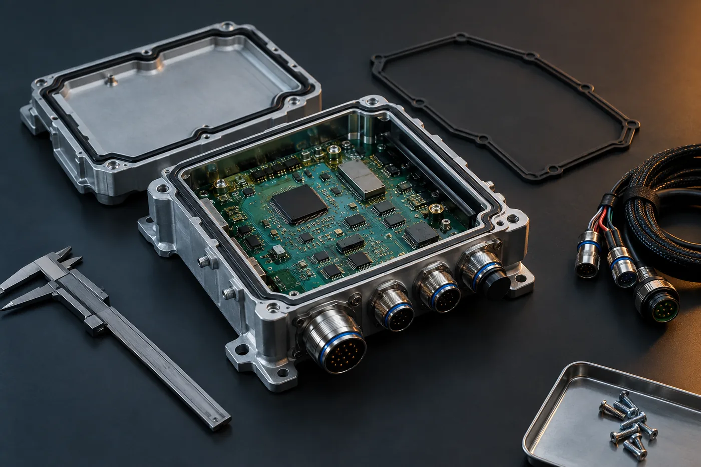

Offer C
A demonstrator is not yet a mine-ready product.
A structured, evidence-based assessment of what must change before a working demonstrator can be validated, manufactured, installed, serviced, supported and scaled — delivered as a baseline, a scorecard, a prioritized gap register and an indicative roadmap.

Fig. 01 — Productize for the mine
Purpose
What must change before the demonstrator can be deployed, validated, manufactured, serviced, supported and scaled?
Teams routinely underestimate this gap, not because the technology is weak, but because demonstrator success and product readiness are different problems. The assessment makes the remaining work visible, prioritized and defensible to an executive, an investor, a distributor or a major customer.
Fit
Entry criteria.
- A defined and approved mining application, and a representative working or field-validated demonstrator or prototype.
- A defined deployment context and workflow, with meaningful design, test, pilot or field evidence.
- One primary product, with no more than three meaningful variants or configurations.
- A single design-driving deployment context, selected collaboratively as the intended or worst-case operating context.
- Offer B is not a prerequisite where equivalent evidence already exists. Where application or demonstrator definition is materially unresolved, the honest recommendation is to route back to Offer A or B.
Scope
Seven assessment domains.
Product and system architecture
Architecture, interfaces, assumptions, technical maturity and known failure modes; interactions across hardware, firmware, application and cloud software, communications, data flows and field processes; and which demonstrator elements can be retained, must be redesigned, or must be retired.
Mine environment and ruggedization
Vibration, shock, thermal cycling, dust, moisture, ingress, corrosion, electrical noise, power quality, connectors, mounting, access and installation, assessed against the selected design-driving context.
Embedded, application, cloud, data and communications readiness
Software and data architecture, connectivity, telemetry, configuration management, update paths and operational data handling at a productization-planning level.
Verification, validation, certification and compliance path
The likely path, sequence and prerequisites — identified and planned, not executed or certified.
Manufacturability, testability and supply-chain readiness
Design-for-manufacture and design-for-test observations, production test strategy, sourcing risk and supply-chain readiness.
Deployment, service and lifecycle support
Installation, commissioning, diagnostics, spares, field service, escalation, upgrade and end-of-life considerations.
Channel and execution readiness
Technical enablement, documentation, training and serviceability requirements implied by distributor or partner-led scale, and the organizational capability required to execute.
Deliverables
What you receive.
| Deliverables | What you receive |
|---|---|
| Design-Driving Deployment Context Definition | The selected intended or worst-case operating context that anchors the entire assessment. |
| Current-State Executive Summary | A concise, evidence-based statement of where the product actually stands. |
| Demonstrator-to-Product Transition View | What is retained, what is redesigned, and what provisional elements must be retired before commercial release. |
| Mine-Ready Productization Scorecard | Readiness rated across the seven domains, with the evidence behind each rating. |
| Productization Gap Register | Prioritized gaps with impact, dependency and recommended action. |
| Initial certification, validation and compliance path | The likely sequence, prerequisites and planning implications. |
| Manufacturing and service findings | Manufacturability, testability, supply-chain, deployment and support observations. |
| Recommended Delivery and Operating Model | The resourcing, partner and governance model suited to the work ahead. |
| Indicative 18–24 month roadmap | A sequenced, planning-level view of the path to mine-ready and channel-ready. |
| Recommended next-phase scope | A concrete definition of the work that should follow, so the roadmap can be acted on. |
Boundaries
Explicitly out of scope.
- Re-definition of the first mining application, demonstration context or field demonstrator — these are Offer A and Offer B activities.
- Multiple independent products, product families or portfolio-level reviews; multiple mine sites, geographies or multi-customer studies.
- Final engineering design, detailed drawings, schematics, PCB layout, firmware or software development, source-code review, detailed bills of material, tooling, prototype build, production release or manufacturing launch.
- Functional-safety analysis, safety-integrity-level work, formal safety-case preparation or functional-safety certification.
- Detailed cybersecurity assessment, penetration testing, vulnerability assessment or security certification.
- Autonomous-control, machine-control, vehicle-control or control-system application analysis.
- Certification testing, formal compliance assessment, laboratory testing, regulatory filings, certification submission or certification approval.
- Site surveys, field testing, in-person meetings, mine visits, installation surveys or customer-specific detailed integration studies.
- Sourcing, formal qualification, audit, procurement, commercial negotiation, contracting or management of partners.
- Legal, regulatory, tax, financial, insurance, product-safety, product-liability, warranty or manufacturer-of-record opinions, and any warranty, field-performance, certification-outcome or schedule guarantee.
Delivery
How it runs.
- Duration
- Up to 4 calendar weeks from kickoff, subject to timely receipt of client inputs.
- Mode
- Remote-first, with a structured kickoff, domain working sessions, draft review and an executive readout.
- Commercial model
- Fixed scope, fixed fee, with stated assumptions, client inputs, acceptance criteria and exclusions.
- Client inputs
- Architecture and design information, test and field evidence, demonstrator access or documentation, a technical point of contact, and timely review of draft deliverables. Missing evidence is documented as a risk, dependency or recommended next action rather than assumed.
Next decision
What the assessment enables.
A defensible productization baseline that supports an investment decision, an investor or distributor conversation, a major customer commitment, or an internal go/no-go. Where the organization is ready to execute, the roadmap becomes the input to Offer D.
Start a conversation
A demonstrator is not yet a mine-ready product.
A structured, evidence-based assessment of what must change before a working demonstrator can be validated, manufactured, installed, serviced, supported and scaled — delivered as a baseline, a scorecard, a prioritized gap register and an indicative roadmap.